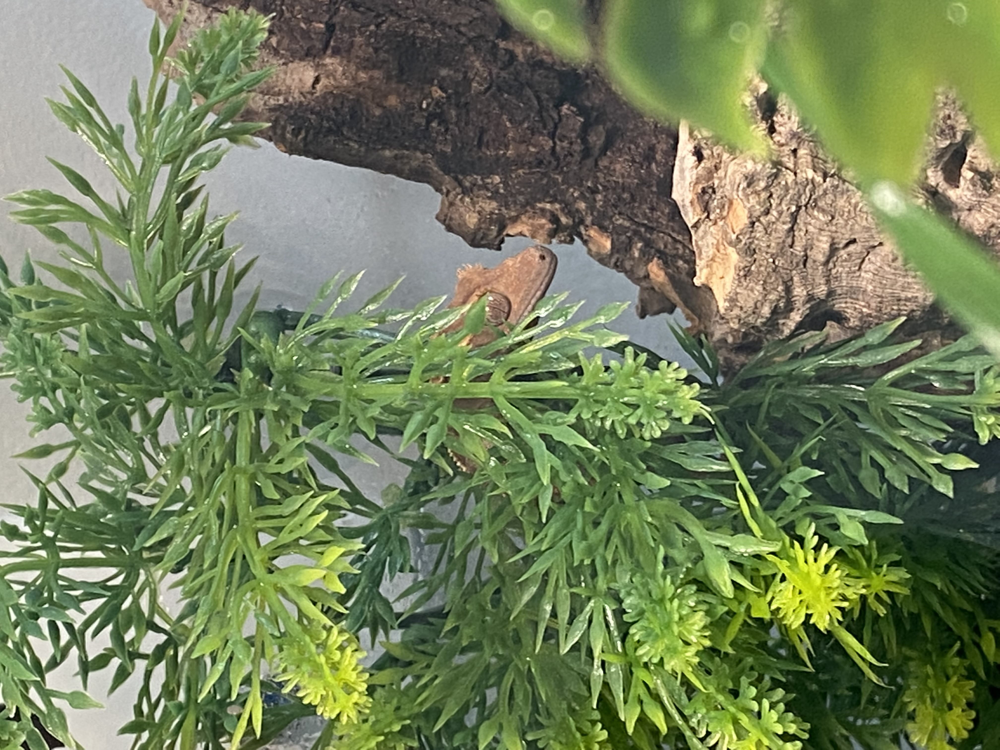

About Me

My name is Todd Johnston. I am Computer Engineering major at BYU with a love for learning and understanding how computers work. I have a 3.40 GPA and a great understanding of C++, HTML, CSS, and Python. In addition I have practice with Linux Systems, working in Git and the SDLC.
Learning is something I am passionate about. Because of this I have dedicated myself to constantly be learning and growing my skill. In order to do this I have joined the competitive programming club and linux club at BYU, in addition to designing, both on my own and in a team setting, applications for personal projects.
From my job as an IT Monitoring Intern I have experience working in a tech oriented industry as well as gained practice in both communication and network systems.
I am confident that I will be an asset to anyone that I work with as I have a desire to perform to the best of my ability everyday.
Resume